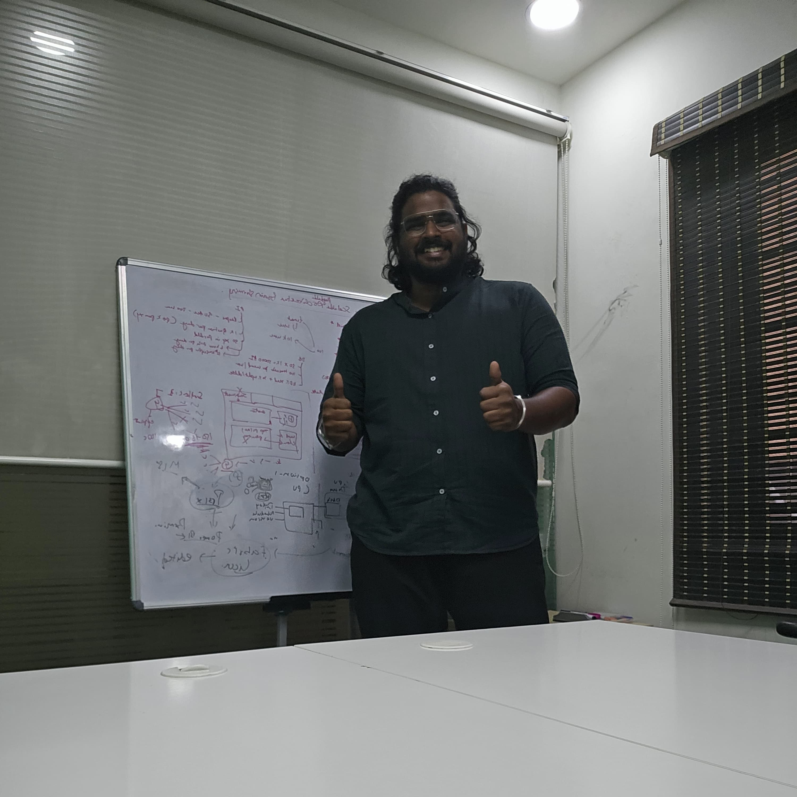
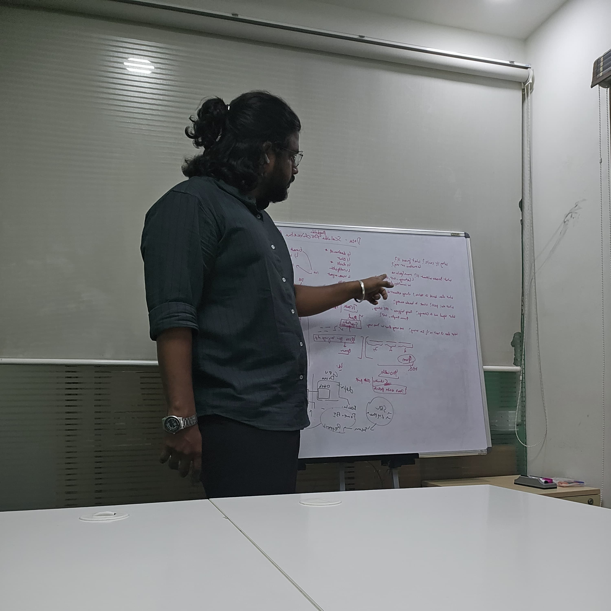
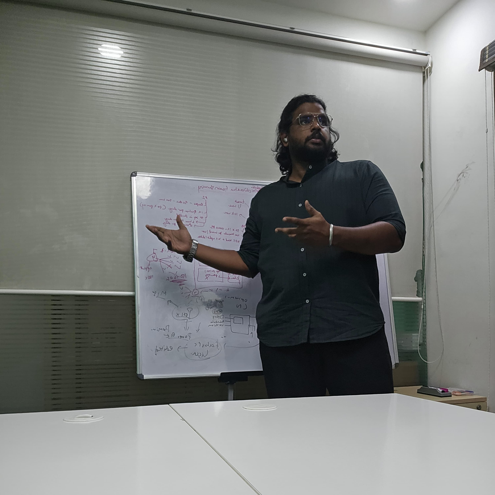

Bridging the gap between complex data pipelines and executive decisions.
Specialized in engineering end-to-end data architectures: building robust streaming & batch pipelines with Microsoft Fabric, Databricks, PySpark, & Kafka, and translating raw data into decision-ready Power BI executive dashboards.

About Me
Data Engineer with End-to-End Ownership
I am a Senior Data Engineer & BI Developer with over 6 years of experience mastering both ends of the modern data stack.
My strength lies in owning the complete lifecycle of a data product: from diagnosing source systems and establishing change data capture (CDC), to constructing multi-stage Medallion Lakehouses (Bronze, Silver, Gold) in Databricks and Microsoft Fabric, all the way to optimizing semantic models and delivering high-impact executive dashboards.
Throughout my journey across global clients in retail coffee, automotive manufacturing, healthcare, and FMCG, I have consistently driven technical efficiency—such as slashing Fabric Capacity Unit (CU) consumption by 45% through Databricks transformation offloading and incremental refresh strategies.
Resilient pipelines, PySpark orchestration, Kafka streaming, and capacity cost optimization.
Complex DAX, clean dimensional modeling, and interactive reporting that business leaders rely on.

Designing scalable data architectures, capacity modeling, and medallion lakehouses with engineering teams.
End-to-End Pipeline Architecture
How I architect data solutions from source ingestion and CDC streaming to the medallion lakehouse and executive dashboards.
Sources & Ingestion
Capturing transactional changes with Debezium CDC, Kafka streams, CData sync, REST APIs, and SSIS batches.
Streaming & Queues
Sub-second event routing with Azure Event Hub, Fabric Eventstream & Eventhouse processing 1,000+ rec/min.
Medallion Lakehouse
Bronze to Silver to Gold modeling via Databricks (PySpark, Spark SQL) & Fabric Pipelines with Delta Parquet tables.
BI & Semantic Layer
Optimized star schemas, DAX measures, incremental refresh, and sub-5 min latency Power BI dashboards.
Technical Expertise
Comprehensive stack spanning modern data engineering, lakehouse architecture, and enterprise BI analytics.
BI & Reporting
Executive dashboards, operational reports, and high-performance semantic modeling.
ETL & Data Pipelines
Batch orchestration, notebook pipelines, and enterprise data consolidation.
Streaming & CDC
Real-time telemetry ingestion, event streaming, and database change capture.
Data Platforms
Lakehouse environments, cloud data warehouses, and relational databases.
Data Modeling
Scalable schemas, dimensional modeling, and lakehouse storage design.
DevOps & Tooling
Version control, CI/CD pipelines, issue tracking, and agile workflows.
Featured Client Projects
Key enterprise initiatives delivering measurable performance improvements and decision-ready intelligence.
Microsoft Fabric Migration & Capacity Optimization
Migrated an enterprise analytics ecosystem of 20+ Power BI dashboards (sales, loyalty program, seasonal trends, daily orders) from ADF/Databricks/ADLS into Microsoft Fabric, enabling self-service analytics across the entire organization.
Diagnosed semantic model refresh consuming 66% of total Fabric Capacity Units (CUs), causing query queuing and cancellations. Redesigned refresh architecture by offloading heavy transformations to Databricks and applying incremental refresh, slashing refresh-driven CU consumption to 35% (~45% overall reduction).
Real-Time IoT Streaming Telemetry & Lakehouse
Architected an end-to-end real-time telemetry ingestion pipeline capturing sensor metrics across 3 manufacturing plants to power low-latency shift and fault-detection dashboards.
Enabled CDC on SQL Server via Debezium and Kafka, streamed through Azure Event Hub into Fabric Eventstream/Eventhouse processing ~1,000 records/minute. Delivered low-latency (~5 minute) Power BI reports alongside parallel Medallion batch pipelines.
Salesforce & Sage Intacct Unified Warehouse
Designed an automated integration unifying CRM (Salesforce) and ERP/Financial (Sage Intacct) data sources into SQL Server to deliver complete revenue visibility for executive leadership.
Synchronized ~100,000 rows/day through CData and SSIS into unified reporting schemas. Built executive Power BI dashboards with historical YoY and MoM comparisons, divisional splits, and opportunity conversion rates.
Automated Operations Warehouse & Reporting
Consolidated disparate data from Excel spreadsheets and operational REST APIs into a single-source-of-truth data warehouse for dispatch, field operations, and accounting.
Replaced an error-prone recurring monthly manual extraction cycle with an automated ETL pipeline and executive Power BI dashboards tracking live revenue, expenses, and operational KPIs.
Experience & Growth
Demonstrated trajectory of leadership, technical ownership, and delivering value to global stakeholders.
Sr. Data Engineer
- Architecting end-to-end data lakes and streaming telemetry solutions across international clients (Black Rock Coffee Bar, Toyoda, Neil Kelly).
- Pioneered capacity optimization frameworks on Microsoft Fabric, reducing client cloud costs and eliminating query queuing.
- Spearheading development of an internal AI-based BI product (ongoing since March 2026).
Data Engineer
- Built automated ETL pipelines and executive Power BI suites for FirstLine Road Solutions and Neil Kelly Constructions.
- Created RelyBill claims-analytics data models, stored procedures, and paginated views for internal healthcare products.
- Developed complex SSRS reports and SQL procedures for GetixHealth (US healthcare domain).
- Resolved critical Pentaho ETL failures for Empereon-Constar, cutting data latency by 60%.
Software Engineer / Intern
- Engineered ETL pipelines using Pentaho and SSIS connecting Amazon Redshift and SQL Server for global FMCG & DMS clients (Carlsberg, Dairy Day, Bimbo, Syngenta, SOHO) across US, Mexico, Indonesia, Thailand, and Nepal.
- Delivered SSRS, Jasper, and Apache Superset reports for sales and distribution KPI tracking; provided L2/L3 production support for live mission-critical data flows.
System Design & Technical Sessions
Leading technical workshops, collaborating on whiteboard architectures, and mentoring engineering teams.
Lakehouse & Streaming Workflows
Deep-diving into medallion lakehouse stages, capacity modeling, and event ingestion topology.
Collaborative Problem Solving
Fostering high-trust communication, code quality standards, and continuous engineering improvements.

Translating Tech to Business Value
Presenting technical trade-offs clearly to product managers, domain leaders, and executive stakeholders.
Education
Certifications & Validations
Ready to elevate your data architecture?
Whether you are planning a Microsoft Fabric migration, architecting a real-time IoT streaming pipeline, or looking for an impactful Senior Data Engineer to join your team, let’s connect.